D1 · Story Frame
However, the Wall Street Journal reports that the unemployment rate for young people without a college degree has “rarely been lower” and that the opposite is true for recent college graduates. While this may be true, the numbers still show that the highest unemployment rate comes from those without a college degree. In 2026, the unemployment rate for adult Americans over the age of 25 with a bachelor's degree or higher is 2.8%. Conversely, the unemployment rate of those with just an associate's degree is 3.6%, and it only grows from there. For adults in the United States with just a high school diploma the rate of unemployment in 2026 is 4.5%, and higher for those who didn't graduate high school having an unemployment rate at 5.5%.
D2 · Editorial Figures
D3 · Accessible Data Table
| Unemployement Rate Per Year | 2022 | 2023 | 2024 | 2025 | 2026 |
|---|---|---|---|---|---|
| Bachelor's degree and higher (25+) | 2.0 | 2.1 | 2.3 | 2.6 | 2.8 |
| Some college or associate degree (25+) | 3.2 | 3.0 | 3.4 | 3.4 | 3.6 |
| High School graduates, no college (25+) | 4.0 | 3.9 | 4.2 | 4.2 | 4.5 |
| Less than a High School diploma (25+) | 5.5 | 5.6 | 6.2 | 6.1 | 5.5 |
| 20 years and over (all education levels) | 3.4 | 3.3 | 3.7 | 3.9 | 3.9 |
| Total unemployment (16 yrs and older) | 3.7 | 3.6 | 4.0 | 4.3 | 4.3 |
U.S. Bureau of Labor Statistics. https://data.bls.gov/toppicks?survey=ln
D4 · Responsive SVG
D5-D6 · System and Documentation
Extend Module 1 patterns, then link your sources, asset credits/licenses, test record, transformation notes, and AI disclosure.
U.S. Bureau of Labor Statistics: https://data.bls.gov/
Wall Street Journal: https://www.wsj.com/lifestyle/careers/
Image 1: Pexels/Vitaly Gariev https://www.pexels.com/photo/
Image 2: Pexels/Ron Lach https://www.pexels.com/photo/
Also noted in README.txt
Tests
Data-transformation Note
Calculations: table values were derived from calculating the average unemployment rate per year. To view data, follow the link, then select the categories listed below and click "Retrieve data":
- Unemployment Rate
- Unemployment Rate - 20 Years & Over Men
- Unemployment Rate - 20 Years & Over Women
- Unemployment Rate - 25 Years & Over, Less than a High School Diploma
- Unemployment Rate - 25 Years & Over, High School Graduates No College
- Unemployment Rate - 25 Years & Over, Some College or Associate Degree
- Unemployment Rate - 25 Years & Over, Bachelor's Degree and Higher
Validation
HTML
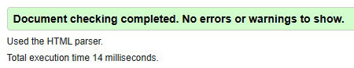
CSS
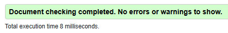
320px
|
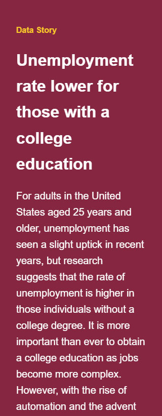 |
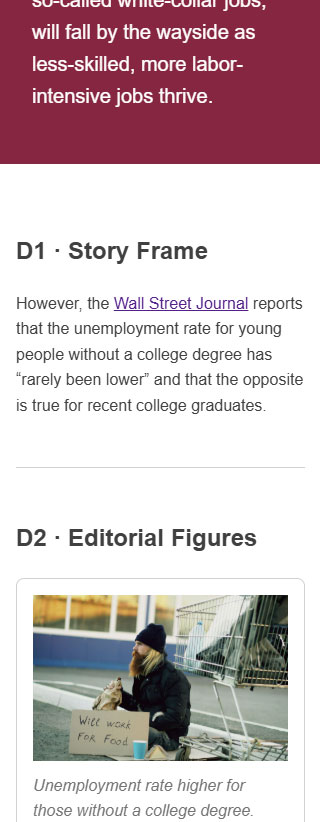 |
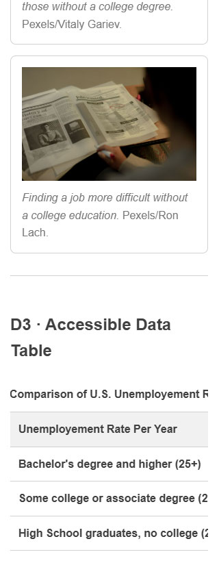 |
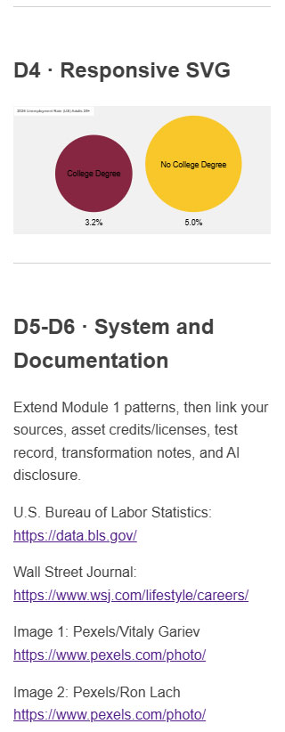 |
|---|
768px
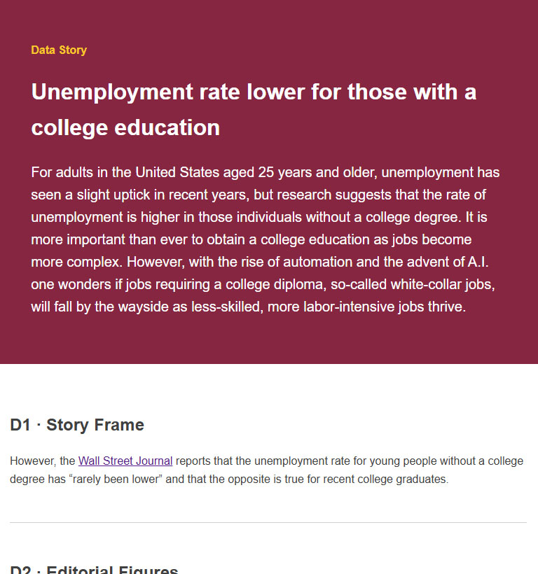
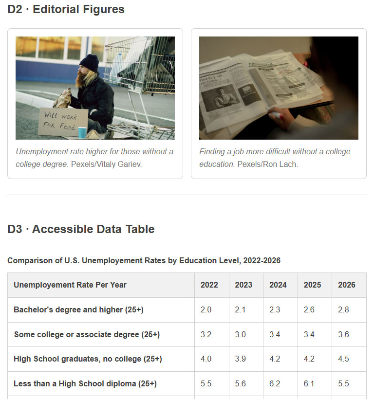
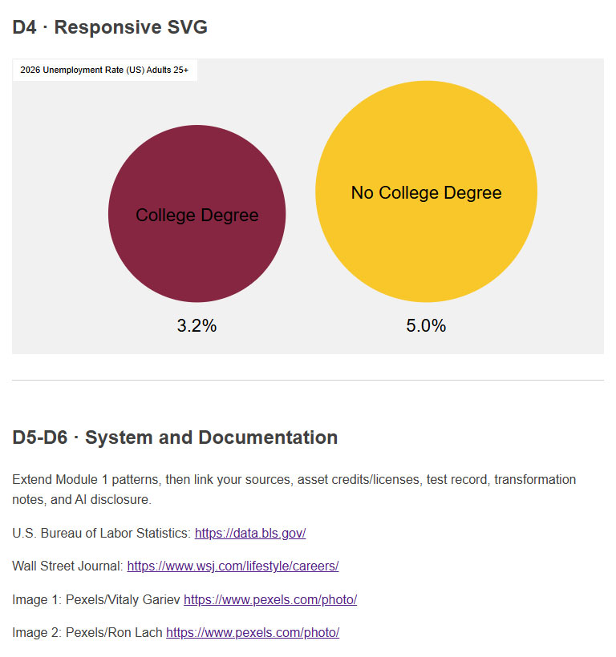
1280px
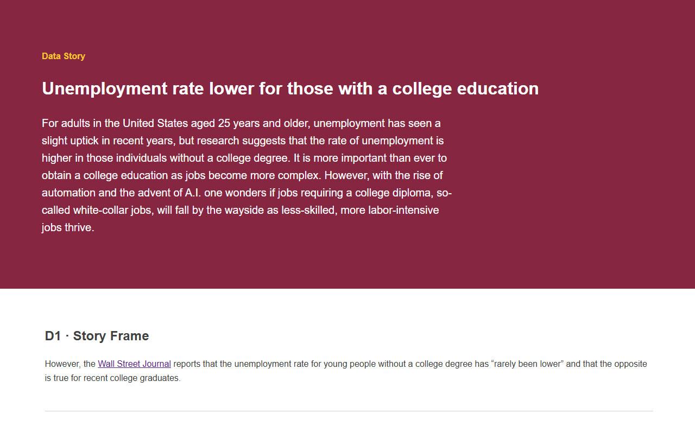
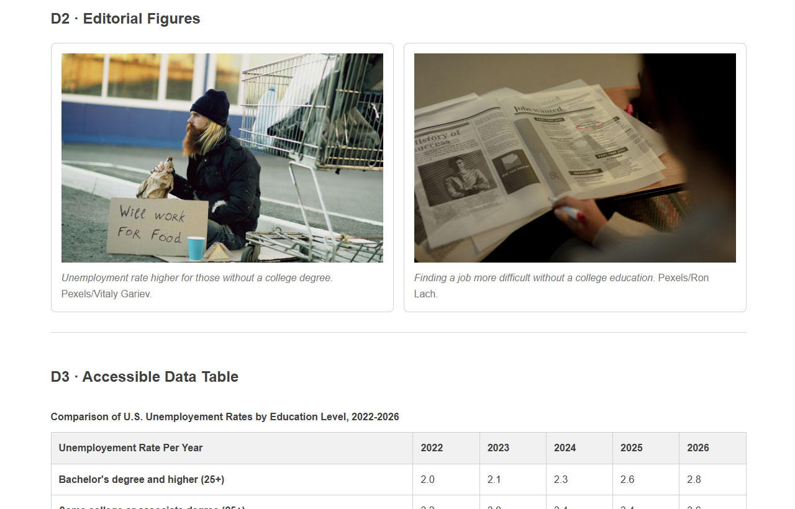
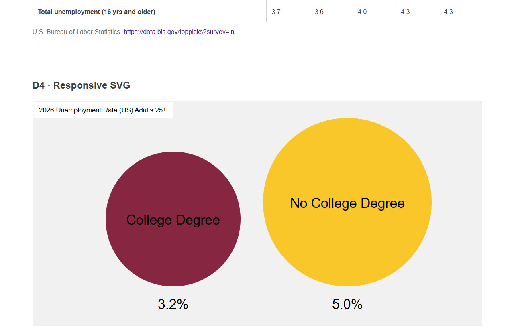
200% zoom
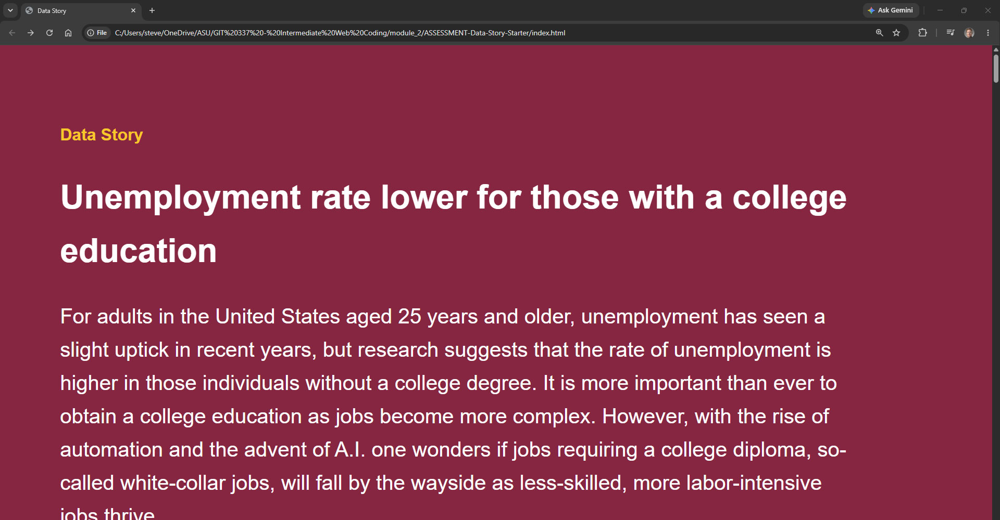
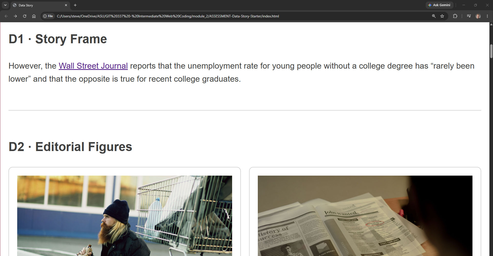
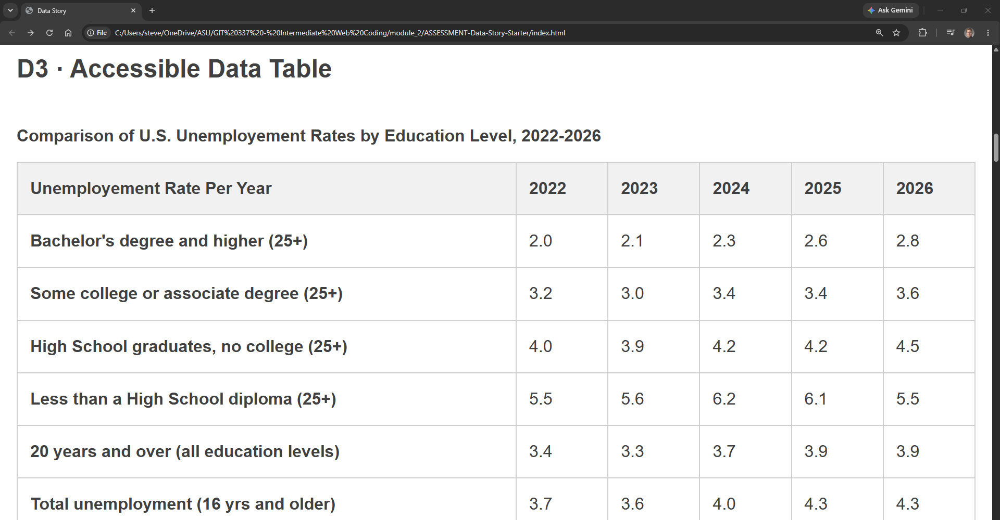
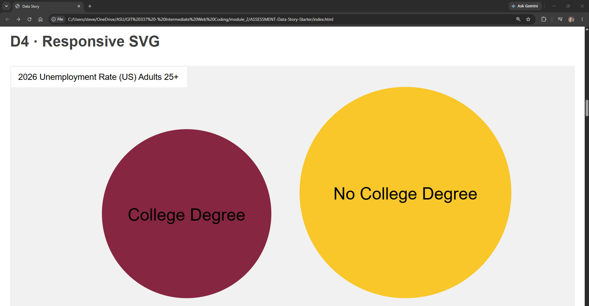
Responsive SVG with 3 shapes
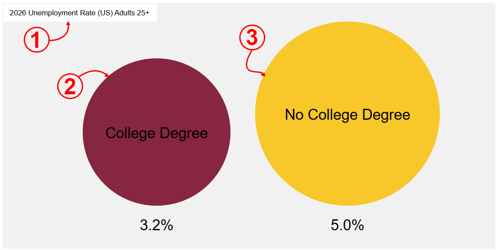
Module 1 Font Stack
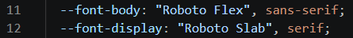
Keyboard Access
|
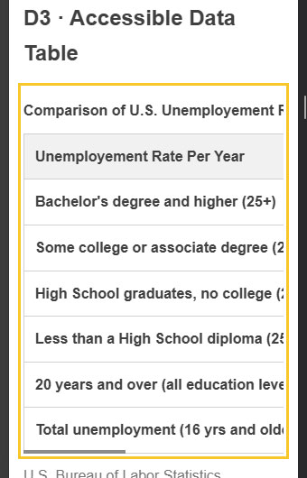 |
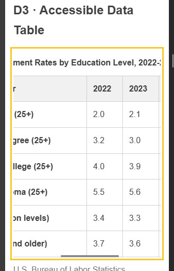 |
|---|
Accessibility Tree Inspection
Figure
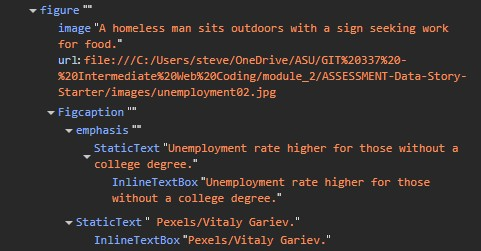
Table
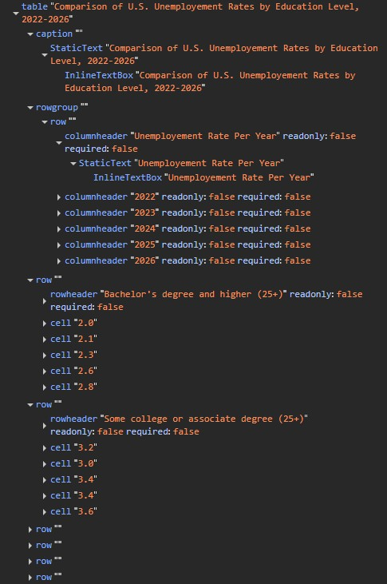
SVG
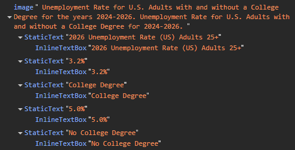
Image-Disabled Review
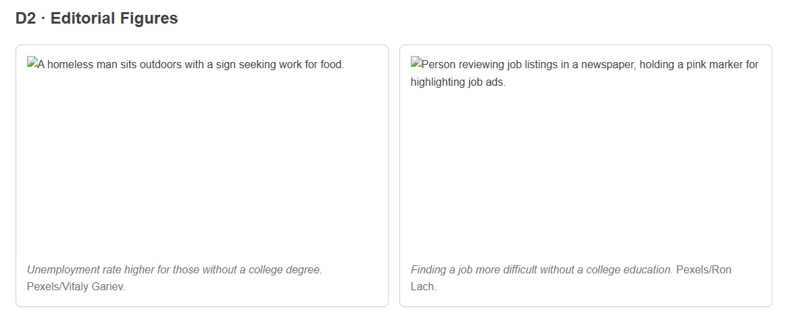
Source-to-Page Spot Check
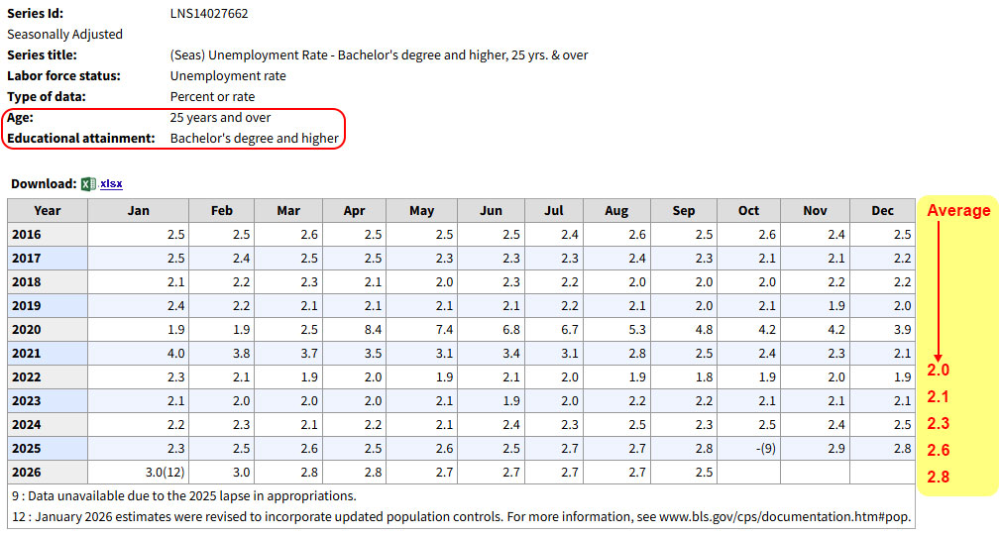
https://data.bls.gov/toppicks?survey=ln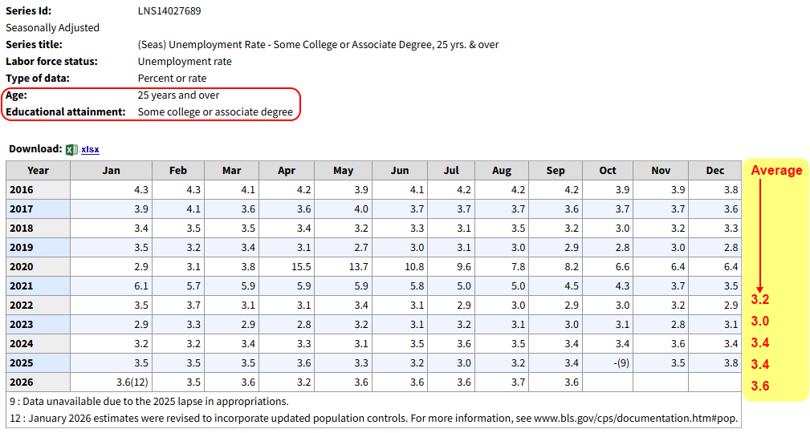
https://data.bls.gov/toppicks?survey=ln https://data.bls.gov/toppicks?survey=lnA.I. Disclosure
No A.I. used.